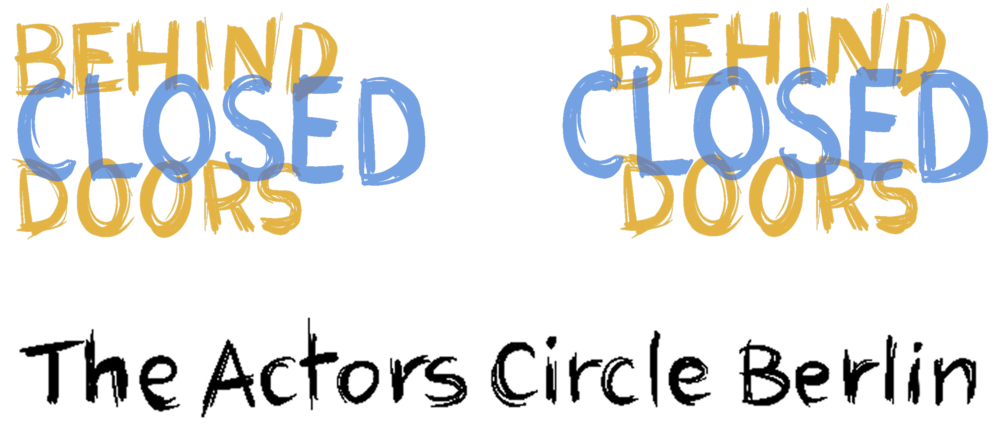
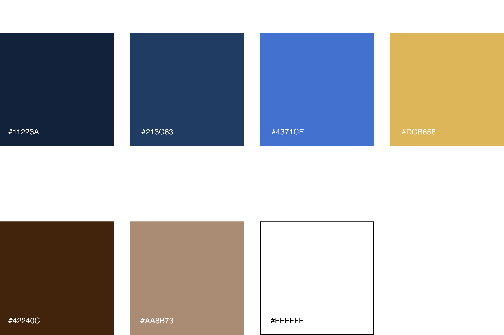
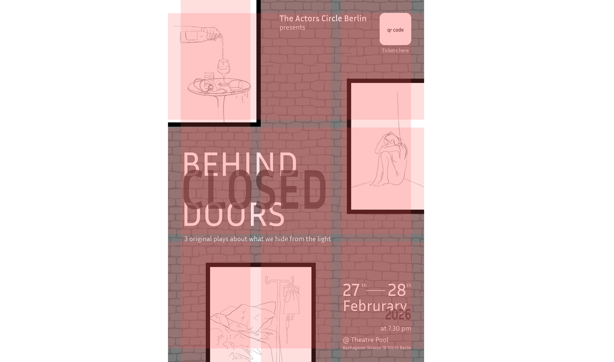
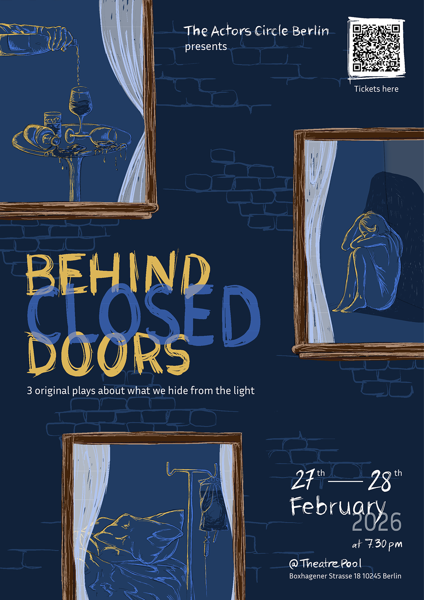

Overview
Mental health struggles are often invisible precisely because they happen behind closed doors — in private rooms, in private minds, in the parts of ourselves we don't show others. When Actors Circle Berlin commissioned the key visual for their theatre show of the same name, that tension between visibility and concealment became the entire design brief.
Behind Closed Doors is a show composed of three short plays, each exploring a different facet of mental health: a troubled relationship with a dying mother, a woman's relationship with her own body, and a public figure hiding an alcohol addiction. My task was to create a single visual that could hold all three stories — intimate, a little unsettling, and clear enough to work as event communication across print and digital.
This was a solo commission. I handled the full creative process: concept development, all hand-drawn illustrations and lettering in Procreate, layout and composition in InDesign, and the adaptation of the system into digital formats (Instagram post and website ticketing banner). The project was completed in 3 days.
- Procreate
- InDesign
Client
Actors Circle Berlin
The brief
The goal was to create a key visual that felt intimate and unsettling — reflecting the secrecy of private life — while staying clear and readable for event communication. The deliverables were a printed poster, an Instagram post, and a website ticketing banner.
Reading the three scripts was my starting point. Each play had a different emotional register and a different kind of hidden thing: illness, self-image, addiction. The challenge was finding a visual language that could hold all three without flattening them into a single message.
Concept
The core idea came from a simple question: what does it feel like to witness something private you weren't supposed to see? I landed on the image of looking into lit windows at night — the audience becomes the intruder, peering into the characters' homes and minds. The warm glow of an interior seen from outside carries exactly the right emotional charge: intimacy, voyeurism, unease.
Each of the three plays became a scene in one of those windows:
- "666" by Alex Casadio — an unmade bed with an IV tower beside it, for a story about a troubled relationship with a dying mother.
- "Woman/Body" by Roberta Sgariglia — a female body, for a story about self-acceptance and the relationship a woman has with herself.
- "Blackout" by David Coyle — a hand pouring wine, bottles and glasses accumulating on a table, for a story about a public figure hiding an addiction.
The tone throughout was calibrated to create slight uneasiness — you're seeing something you're not supposed to see — without tipping into horror or melodrama.

Design system
Typography
I chose hand-drawn lettering to evoke an urgent, DIY feeling — like something written quickly, secretly, or under emotional pressure. It creates a deliberate rawness that sits in contrast with the composed layout, adding tension without being illegible.
Colour palette
A deep night blue as the base, with warm amber and ochre light accents to suggest lit interiors seen from outside in the dark. The contrast between cool exterior and warm interior is the emotional heart of the palette.
Grid & layout
A loose 3×3 structure — three columns, three rows — to house the three scenes. Selected elements are placed slightly off-grid to create movement and tension, resisting the rigidity that would undermine the emotional tone.
Illustration
All illustrations, textures, patterns, and the main lettering were hand-drawn in Procreate, then composed and finalized in InDesign. The hand-made quality was important — it gives the piece a human imperfection that felt right for stories about very human vulnerabilities.

Final deliverables
The poster came first, establishing the full visual system. I then adapted it into an Instagram post and a website ticketing banner, maintaining the visual language while adjusting proportions and hierarchy for each format.

Reflection
Behind Closed Doors is one of the projects I'm proudest of, partly because of the constraints: a 3-day timeline, a solo brief, and a subject matter that required genuine sensitivity. Mental health as a design theme is easy to get wrong — it can tip into cliché, or worse, into aestheticising something that deserves to be treated carefully. I'm glad the "lit window at night" concept gave the work a visual idea strong enough to anchor everything else without needing to be explicit.
The constraint of three separate plays inside one visual actually made the design stronger. Rather than trying to represent "mental health" in the abstract, I had to translate three specific, concrete human situations into three specific scenes. That specificity is what gives the poster its texture — it rewards looking closely.
Working with hand-drawn illustration and lettering rather than a polished digital aesthetic was also a deliberate choice I'd make again. The rawness serves the content. Not every design problem wants to look perfect.
Credits
Client: Actors Circle Berlin
Design, illustration & hand lettering: Alessandra Sgariglia
Plays: "666" by Alex Casadio · "Woman/Body" by Roberta Sgariglia · "Blackout" by David Coyle